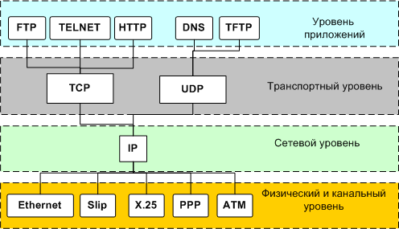
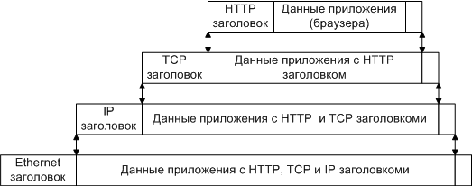

Лекция 2
Маршрутизация в Интернет
RFC (Request for Comments) - официальная документация по Internet. Все разработчики должны придерживаться этой документации.
В Интернете используется технология Клиент-Сервер
Маршрутизация в сети Internet – пакетная.
Пакет – однородная часть данных приложения заданной длины.
Маршрутизатор – программно-аппаратные средства переадресации пакетов.
Маршрут - это последовательность маршрутизаторов, которые должен пройти пакет от отправителя до пункта назначения.
Схема маршрутизации: ПК 1 пользователя – Локальная сеть – Маршрутизатор1 – Сервер1 – Маршрутизатор2 – Сервер2 - Локальная сеть – ПК 2 пользователя
Адресация в сети Internet
Типы адресов
Типы адресов:
1. Физический (MAC-адрес). Локальный адрес компьютера. Для узлов, входящих в локальные сети - это МАС-адрес сетевого адаптера. Эти адреса назначаются производителями оборудования и являются уникальными адресами.
2. Сетевой (IP-адрес). Этот адрес используется на сетевом уровне. Он назначается администратором во время конфигурирования компьютеров и маршрутизаторов, например 109.26.17.100.
3. Символьный (DNS-имя). Символьный идентификатор-имя (DNS), например, www.kru.ru.
IP-адреса
IPv4 - адрес является уникальным 32-битным идентификатором IP-интерфейса в Интернет. IP-адреса принято записывать разбивкой всего адреса по октетам (8), каждый октет записывается в виде десятичного числа, числа разделяются точками. Например, адрес
10100000010100010000010110000011
записывается как
10100000.01010001.00000101.10000011 = 160.81.5.131
IP адрес может быть от 0.0.0.0 до 255.255.255.255, т.к. 8 бит позволяют записать 256 чисел в каждой позиции адреса.
IPv6 - адрес является уникальным 128-битным идентификатором IP-интерфейса в Internet-2, в каждой позиции число от 0 до 4.294.967.296
Назначение позиций:
160.81.5.131 - IP-адрес
160.81.5. - номер сети (рабочей группы)
131 - номер хоста (компьютера)
При работе в Интернет по коммутируемому доступу IP-адрес назначается сервером на данный сеанс связи. При выделенной линии связи IP-адрес является постоянным. На серверах имеются 2 списка адресов для постоянного и временного использования.
Базовые протоколы
Протокол - это совокупность правил взаимодействия всех объектов сети на аппаратном и программном уровне.
Согласно стандарту OSI, выделяют семь уровней работы коммуникационных сетей:
1. Физический - это правила соединения линий связи между собой, правила кодирования сигналов.
2. Канальный - проверяет занятость среды передачи и обнаруживает и корректирует ошибки.
3. Сетевой - отвечает за маршрутизацию данных в компьютерных сетях.
4. Транспортный - обеспечивает обнаружение потерянных и искаженных данных.
5. Сеансовый - обеспечивает диалог между компьютерами, определяя какой из них передает, а какой - принимает данные.
6. Представительский - обеспечивает преобразование данных для использования их в различных системах.
7. Прикладной - уровень, который обеспечивает взаимодействие различных компьютерных программ с сетью.
Стек - это набор протоколов, которые реализуют функции всех семи уровней, совместимых между собой.
Наиболее популярным на сегодняшний день является стек TCP/IP (Transmission Control Protocol / Internet Protocol). TCP разбивает данные на пакеты при передаче и соединяет пакеты воедино при приеме. IP - система адресации, указывающая, откуда и куда пакет идёт.

Стек протоколов TCP/IP
Пакетная передача данных
Данные передаются в пакетах. Пакеты имеют заголовок и окончание, которые содержат служебную информацию. Данные, более верхних уровней вставляются, в пакеты нижних уровней.

Пример инкапсуляции пакетов в стеке TCP/IP
Сетевой уровень:
Протоколы:
IP (см. выше)
ICMP (Internet Control Message Protocol) - расширение протокола IP, позволяет передавать сообщения об ошибке или проверочные сообщения.
IGMP (Internet Group Management Protocol) - позволяет организовать многоадресную рассылку средствами IP.
RSVP (Resource Reservation Protocol) - протокол резервирования ресурсов.
ARP (Address Resolution Protocol) - протокол преобразования IP-адреса в адреса канального уровня.
Транспортный уровень
Протоколы транспортного уровня обеспечивают доставку данных между двумя прикладными процессами. Процесс, получающий или отправляющий данные определяется на транспортном уровне специальным номером, который называется номером порта (портом).
По номеру порта транспортные протоколы определяют, какому приложению передать содержимое пакетов.
Порты могут принимать значение от 0-65535 (два байта 2^16).
Например, номер 21 закреплен за сервисом FTP, 23 - за Telnet, 80 - за HTTP
На транспортном уровне работают два основных протокола (UDP и TCP) и 2 дополнительных (RTP и RTCP) .
TCP (Transfer Control Protocol) – протокол контроля передачи, протокол TCP применяется в тех случаях, когда требуется гарантированная доставка сообщений.
Первая и последняя версия TCP – 1981 год.
Основные особенности:
· Устанавливается соединение.
· Данные передаются пакетами. Модуль TCP нарезает большие сообщения (файлы) на пакеты, каждый из которых передается отдельно, на приемнике наоборот файлы собираются. Для этого нужен порядковый номер пакета.
· Посылает запрос на следующий пакет, указывая его номер. Тем самым, подтверждая получение предыдущего пакета.
· К первому полученному пакету добавляется второй.
· И т.д.
· После последнего пакета происходит проверка целостности данных, при ошибке все начинается сначала
UDP (Universal Datagram Protocol) - универсальный протокол передачи данных, более облегченный транспортный протокол, чем TCP.
Первая и последняя версия UDP – 1980 г.).
Основные отличия от TCP:
· Не разбивает сообщение для передачи
· При потере пакета запрос для повторной передачи не посылается
RTP (Real Time Protocol) - транспортный протокол для приложений реального времени.
RTCP (Real Time Control Protocol) - транспортный протокол обратной связи для приложения RTP..